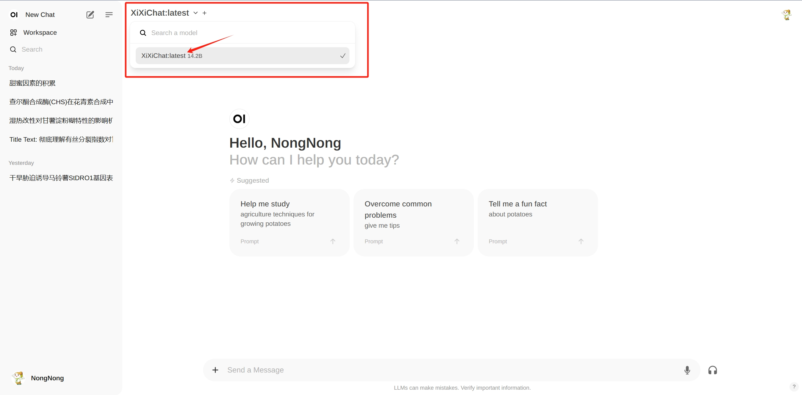

XiXiChat-14b-Beta
XiXiChat-14b-Beta has a 14 billion parameter base model and a short Q&A chat model tailored for agricultural scenarios. The current beta version is trained by around specific 50,000 Q&A data. After extensive testing, we found that the performance of the XiXiChat-14b-Beta is between GPT3.5 and GPT4o for answering generalized questions in agriculture, and higher than GPT4o for answering specialized questions on root crops. Some examples of comparisons are listed below.
Above is ChatGPT4o's answer and below is XiXiChat's answer.XiXiChat's answer is more specific.
XiXiChat's answer is more streamline.
XiXiChat's answer is more substantive.
Close-Beta Guideline
Although our model has made some breakthroughs in the professional field, it still has some problems (e.g., the fine-grained professional and geographical planting problems are still partially incorrect), so we plan to organize a close-beta, and we sincerely invite all you to provide valuable opinions on our model. Due to the limited energy of our group, the test is only for on-campus users in Northwest A&F University at the moment (close-beta). Please access 172.29.1.136:8080 via the campus LAN.
Sign up
For the first use, please register by entering the relevant information. Your submission will be reviewed by an administrator. Upon approval, the user account will be successfully created.

Select a model
Click the top left corner, select the XiXiChat:latest 14.2B model, and once successfully selected, you can begin the question and answer session.
Limitions
Due to limited device computing power, we currently support a quota of 50 model uses per person per day, which we will continue to increase in the future.